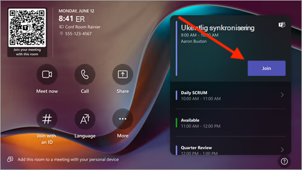
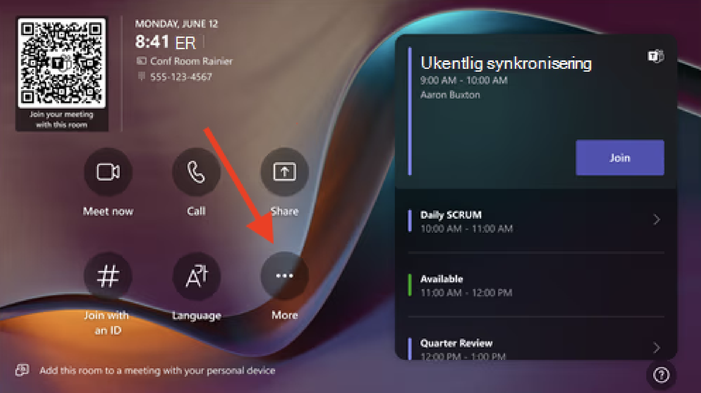
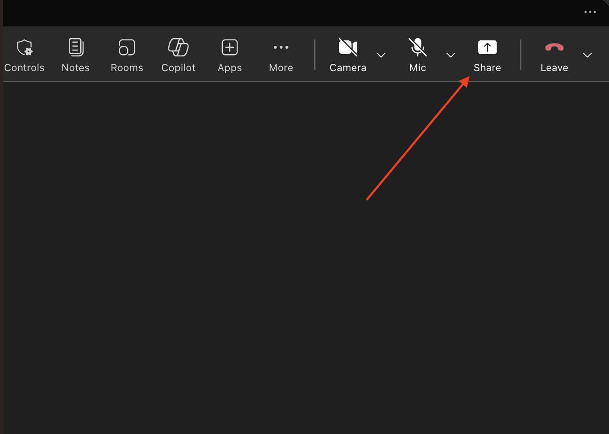
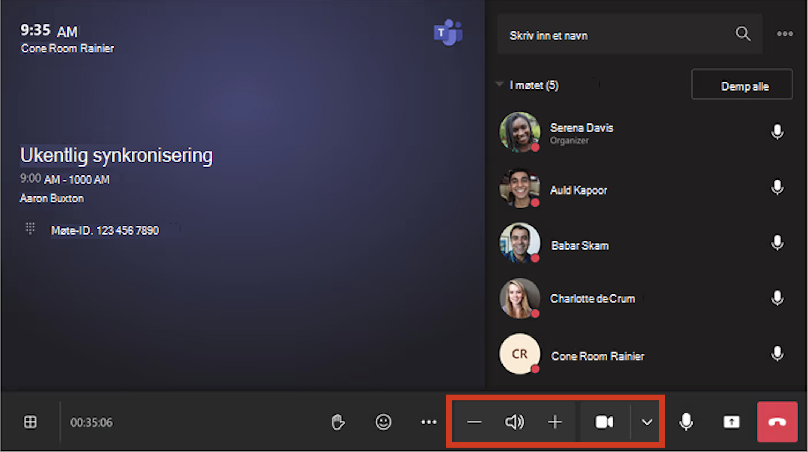

Teams-møterom
Lenovo Teams-møterom – slik bruker du rommet
Kort veiledning for møterom med Teams-løsning. Følg stegene under – dette dekker de vanligste situasjonene.
Starte møte
Inviter møterommet i møteinnkallingen
AnbefaltDette er den enkleste måten å starte møtet.
- Opprett møtet som et Teams-møte.
- Legg til møterommet som deltaker eller plassering.
- Møtet vises da automatisk på skjermen i rommet.
- Trykk «Bli med» for å starte.

Møtet finnes, men rommet er ikke invitert
- Åpne møtet i Outlook eller Teams.
- Legg til møterommet som deltaker.
- Send oppdatering.
- Møtet vises da på skjermen i rommet.
Sjekk at rommet er tilgjengelig (ikke opptatt).
Møte med ID (Teams / Webex / eksterne møter)
Bruk dette hvis:
- Møtet ikke vises i rommet.
- Rommet ikke er invitert.
- Du deltar i eksternt møte.
- Trykk «Mer» (···) på touchskjermen.
- Velg «Bli med ved hjelp av ID».
- Tast inn møte-ID og eventuell kode.

Noen funksjoner kan være begrenset sammenlignet med Teams-møter.
Dele skjerm
Med kabel (anbefalt)
- Koble til HDMI eller USB-C.
- Deling starter automatisk.
Hvis ikke:
- Trykk «Del» på touchskjermen.
- Velg HDMI.
Dette er den mest stabile løsningen.
Uten kabel (trådløs)
Trådløs deling krever et Teams-møte.
Deling fra PC:
- Åpne Teams-møtet på PC og i møterommet.
- Trykk «Del» (pil opp i møtelinjen).
-
Velg hva du vil dele:
- Skjerm
- Vindu
- Presentasjon

Hvis du ikke har et møte:
- Start et raskt møte fra panelet.
- Bli med på både PC og i møterommet.
Teams-rom støtter kun trådløs deling via Teams-møte.
Lyd og kamera
Lyd og kamera – kontroller
- Mikrofon: styres på bordet eller på touchskjermen.
- Kamera: slå av/på via kameraikon.
- Volum: justeres på touchskjermen.

Vanlige problemer
Møtet vises ikke
Rommet er ikke invitert. Legg til rommet som deltaker i møteinnkallingen og send oppdatering.
Ingen lyd
Lydplanken under skjermen er av. Hold inne knappen til høyre til lyset i ThinkSmart-logoen tennes.
Ekko i møtet
Flere enheter i rommet har lyd på. Skru av lyd på alle enheter bortsett fra romenheten.
Skjermdeling fungerer ikke
Mangler Teams-møte eller kabel. Sørg for at du enten har koblet til HDMI/USB-C, eller at du deler via et aktivt Teams-møte.
Finner ikke møte
Bruk møte-ID. Trykk «Mer» → «Bli med ved hjelp av ID» og tast inn møte-ID.
Touchskjerm fryser
- Hold inne knappen helt til høyre på lydplanken til lyset i ThinkSmart (i‑ikonet) slukker.
- Slipp knappen.
- Hold den inne igjen til lyset slår seg på.
Feilmelding
Feil med møterommet?
Mer informasjon
Bildene på denne siden er hentet fra Microsofts dokumentasjon for Teams Rooms.